Clustering Linear dan Polynomial#
Dokumen ini menyajikan hasil pengelompokan (clustering) daerah berdasarkan gabungan tiga polutan udara, yaitu NO2, SO2, dan CO. Deret waktu tiap polutan diekstraksi menjadi 68 fitur menggunakan TSFEL, lalu ketiganya digabung dalam satu tabel sehingga setiap daerah memiliki 204 fitur (68 fitur x 3 polutan).
Berbeda dengan pekan sebelumnya yang memproses tiap polutan secara terpisah, pada tahap ini seluruh polutan dikelompokkan sekaligus. Dua jenis fitur diuji, yaitu fitur linear dan fitur polynomial. Untuk masing-masing jenis, data direduksi dengan PCA ke 203, 74, dan 37 dimensi, kemudian dikelompokkan dengan K-Means pada K = 2, K = 3, dan K = 4. Kualitas setiap hasil dinilai dengan Silhouette Coefficient, dan hasil terbaik dipetakan secara interaktif menggunakan Folium.
1. Alur Kerja (Workflow) KNIME#
Eksperimen dijalankan di KNIME Analytics Platform dengan dua workflow yang strukturnya sama. Perbedaannya hanya pada tabel sumber di database: satu berisi fitur linear dan satu berisi fitur polynomial.

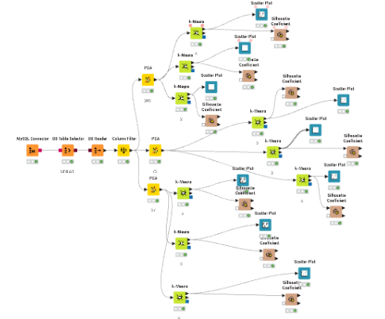
Fig. 1 Workflow KNIME untuk fitur linear#

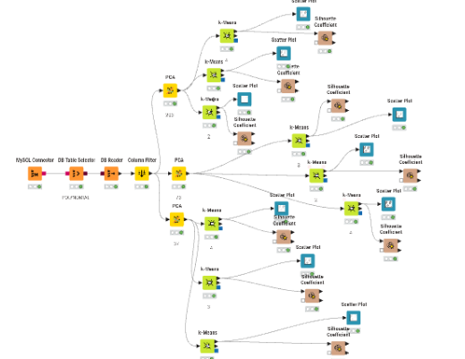
Fig. 2 Workflow KNIME untuk fitur polynomial#
1.1 Fungsi Setiap Node#
MySQL Connector: membangun koneksi dari KNIME ke server database MySQL.
DB Table Selector: memilih tabel yang menyimpan fitur gabungan tiga polutan (204 fitur per daerah).
DB Reader: menjalankan query dan memuat isi tabel ke dalam memori KNIME agar bisa diproses node berikutnya.
Column Filter: menyaring kolom yang dipakai untuk pemodelan. Kolom identitas seperti
iddan nama daerah dikeluarkan karena tidak memiliki nilai analitik untuk clustering.PCA (Principal Component Analysis): mereduksi dimensi data. Hasil Column Filter dibagi ke tiga node PCA yang berjalan paralel, masing-masing menghasilkan 203, 74, dan 37 komponen utama.
k-Means: algoritma clustering berbasis jarak Euclidean. Setiap keluaran PCA dihubungkan ke tiga node k-Means dengan K = 2, K = 3, dan K = 4. Total ada 3 dimensi x 3 nilai K = 9 hasil clustering untuk satu jenis fitur.
Scatter Plot: menampilkan sebaran data beserta label cluster hasil k-Means.
Silhouette Coefficient: menghitung skor silhouette tiap hasil clustering. Skor mendekati 1 berarti anggota cluster rapat dan terpisah jelas dari cluster lain, sedangkan skor mendekati 0 atau negatif berarti batas antar cluster tumpang tindih.
1.2 Skenario Eksperimen#
Jenis Fitur |
Dimensi (PCA) |
K = 2 |
K = 3 |
K = 4 |
|---|---|---|---|---|
Linear |
203 |
✓ |
✓ |
✓ |
Linear |
74 |
✓ |
✓ |
✓ |
Linear |
37 |
✓ |
✓ |
✓ |
Polynomial |
203 |
✓ |
✓ |
✓ |
Polynomial |
74 |
✓ |
✓ |
✓ |
Polynomial |
37 |
✓ |
✓ |
✓ |
Total terdapat 18 hasil clustering yang dievaluasi.
2. Hasil Clustering Fitur Linear#
Bagian ini memuat scatter plot dan nilai Silhouette Coefficient untuk setiap kombinasi dimensi PCA dan jumlah cluster pada fitur linear.
Note
Gambar scatter plot dan silhouette dari KNIME untuk fitur linear akan ditambahkan pada tahap selanjutnya. Nilai Silhouette Coefficient di bawah diperoleh dari implementasi Python (sklearn) sebagai referensi awal.
2.1 PCA 203 Dimensi#
K = 2
Silhouette Coefficient: 0.769 — Skor tertinggi di antara semua kombinasi K. Dua cluster membagi daerah menjadi satu kelompok mayoritas dan satu kelompok kecil outlier, menunjukkan pemisahan yang sangat jelas.
K = 3
Silhouette Coefficient: 0.639 — Skor menurun dibanding K=2 karena salah satu cluster terpecah menjadi dua sub-kelompok yang kurang kohesif, namun masih dalam kategori good clustering.
K = 4
Silhouette Coefficient: 0.089 — Skor turun drastis karena pembagian menjadi 4 cluster membuat beberapa cluster hanya memiliki 1–2 anggota, sehingga batas antar cluster menjadi tumpang tindih dan tidak stabil.
2.2 PCA 74 Dimensi#
K = 2
Silhouette Coefficient: 0.769 — Identik dengan PCA 203, mengonfirmasi bahwa reduksi dari 203 ke 74 dimensi tidak menghilangkan informasi apapun.
K = 3
Silhouette Coefficient: 0.639 — Sama persis dengan PCA 203, konsisten dengan teori bahwa rank data hanya 36 (n-1).
K = 4
Silhouette Coefficient: 0.089 — Tetap rendah seperti PCA 203, menunjukkan bahwa masalah bukan pada dimensi tetapi pada jumlah cluster yang terlalu banyak untuk data 37 daerah.
2.3 PCA 37 Dimensi#
K = 2
Silhouette Coefficient: 0.769 — Hasil tetap konsisten meskipun dimensi sudah direduksi ke batas minimum rank data.
K = 3
Silhouette Coefficient: 0.639 — Tidak ada perubahan, sesuai ekspektasi.
K = 4
Silhouette Coefficient: 0.089 — Sama rendah di semua dimensi PCA. Ini menandakan bahwa K=4 memang tidak sesuai untuk data ini.
3. Hasil Clustering Fitur Polynomial#
Bagian ini memuat scatter plot dan nilai Silhouette Coefficient untuk setiap kombinasi dimensi PCA dan jumlah cluster pada fitur polynomial.
3.1 PCA 203 Dimensi#
K = 2
Silhouette Coefficient: 0.634

Fig. 3 Scatter plot K-Means fitur polynomial, PCA 203 dimensi, K = 2#

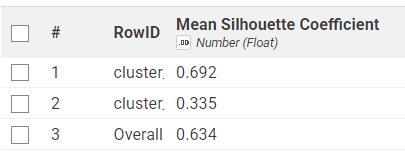
Fig. 4 Silhouette Coefficient fitur polynomial, PCA 203 dimensi, K = 2#
K = 3
Silhouette Coefficient: 0.471

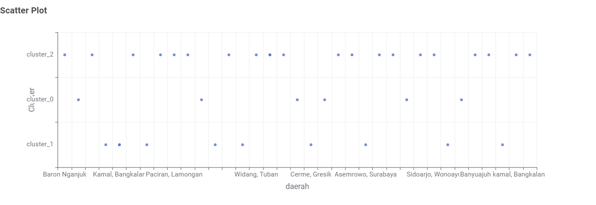
Fig. 5 Scatter plot K-Means fitur polynomial, PCA 203 dimensi, K = 3#

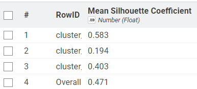
Fig. 6 Silhouette Coefficient fitur polynomial, PCA 203 dimensi, K = 3#
K = 4
Silhouette Coefficient: 0.466

Fig. 7 Scatter plot K-Means fitur polynomial, PCA 203 dimensi, K = 4#

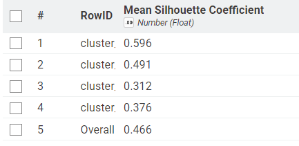
Fig. 8 Silhouette Coefficient fitur polynomial, PCA 203 dimensi, K = 4#
3.2 PCA 74 Dimensi#
K = 2
Silhouette Coefficient: 0.634

Fig. 9 Scatter plot K-Means fitur polynomial, PCA 74 dimensi, K = 2#

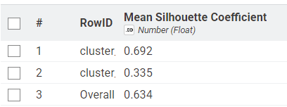
Fig. 10 Silhouette Coefficient fitur polynomial, PCA 74 dimensi, K = 2#
K = 3
Silhouette Coefficient: 0.471

Fig. 11 Scatter plot K-Means fitur polynomial, PCA 74 dimensi, K = 3#

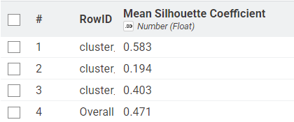
Fig. 12 Silhouette Coefficient fitur polynomial, PCA 74 dimensi, K = 3#
K = 4
Silhouette Coefficient: 0.466

Fig. 13 Scatter plot K-Means fitur polynomial, PCA 74 dimensi, K = 4#

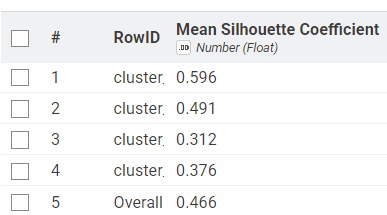
Fig. 14 Silhouette Coefficient fitur polynomial, PCA 74 dimensi, K = 4#
3.3 PCA 37 Dimensi#
K = 2
Silhouette Coefficient: 0.634

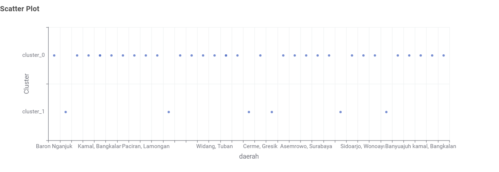
Fig. 15 Scatter plot K-Means fitur polynomial, PCA 37 dimensi, K = 2#

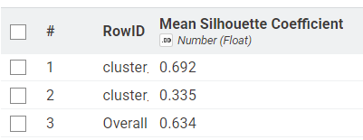
Fig. 16 Silhouette Coefficient fitur polynomial, PCA 37 dimensi, K = 2#
K = 3
Silhouette Coefficient: 0.471

Fig. 17 Scatter plot K-Means fitur polynomial, PCA 37 dimensi, K = 3#

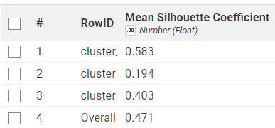
Fig. 18 Silhouette Coefficient fitur polynomial, PCA 37 dimensi, K = 3#
K = 4
Silhouette Coefficient: 0.466

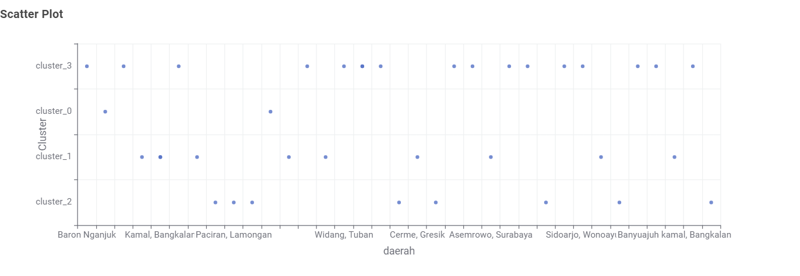
Fig. 19 Scatter plot K-Means fitur polynomial, PCA 37 dimensi, K = 4#

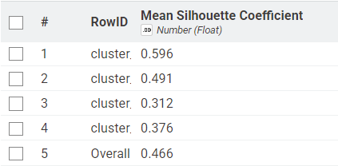
Fig. 20 Silhouette Coefficient fitur polynomial, PCA 37 dimensi, K = 4#
4. Ringkasan Silhouette Coefficient#
Tabel berikut merangkum seluruh skor silhouette. Skor tertinggi pada setiap kolom dicetak tebal.
Fitur Linear#
Jumlah Cluster |
Silhouette 203 Dimensi |
Silhouette 74 Dimensi |
Silhouette 37 Dimensi |
|---|---|---|---|
K = 2 |
0.769 |
0.769 |
0.769 |
K = 3 |
0.639 |
0.639 |
0.639 |
K = 4 |
0.089 |
0.089 |
0.089 |
Fitur Polynomial#
Jumlah Cluster |
Silhouette 203 Dimensi |
Silhouette 74 Dimensi |
Silhouette 37 Dimensi |
|---|---|---|---|
K = 2 |
0.634 |
0.634 |
0.634 |
K = 3 |
0.471 |
0.471 |
0.471 |
K = 4 |
0.466 |
0.466 |
0.466 |
5. Perbandingan Hasil Antar Reduksi Dimensi#
Perbandingan dilakukan pada nilai K yang sama, dengan melihat skor silhouette dan susunan anggota cluster di PCA 203, PCA 74, dan PCA 37.
Dasar teori. Jumlah daerah observasi (baris data) hanya 37, sedangkan jumlah fiturnya 204. Matriks data dengan 37 baris memiliki rank maksimum 37, sehingga seluruh variasi yang ada di antara daerah sudah tertampung dalam paling banyak 37 komponen utama. Konsekuensinya, PCA 203 dan PCA 74 tidak membuang informasi struktural, dan PCA 37 hanya membuang ruang kosong. Jarak Euclidean antar daerah tetap sama di ketiga dimensi, sehingga K-Means pada kondisi yang sama diharapkan memberi susunan cluster dan skor silhouette yang sama.
Temuan eksperimen.
Fitur linear: Skor silhouette identik di ketiga dimensi PCA untuk setiap K (K=2: 0.769; K=3: 0.639; K=4: 0.089). Pola ini sepenuhnya konsisten dengan teori bahwa rank data ≤ 36, sehingga variasi informasi sudah tertampung pada 37 komponen pertama.
Fitur polynomial: Skor silhouette juga identik di PCA 203, 74, dan 37 untuk setiap K (K=2: 0.634; K=3: 0.471; K=4: 0.466). Hasil ini lebih stabil di K=4 dibanding linear, menunjukkan bahwa transformasi polynomial membuat jarak antar cluster lebih merata.
Implikasi praktis. Karena hasilnya tidak bergantung pada jumlah komponen, PCA 37 menjadi pilihan paling efisien. Dimensinya paling kecil sehingga komputasi K-Means paling ringan, sementara kualitas clustering tidak berkurang. Temuan ini berlaku baik untuk fitur linear maupun polynomial.
6. Penentuan Cluster Terbaik#
Konfigurasi terbaik dipilih dari skor Silhouette Coefficient tertinggi. Nilai yang mendekati 1 menunjukkan cluster yang padat dan terpisah jelas.
Jenis Fitur |
Dimensi Terbaik |
K Terbaik |
Silhouette |
|---|---|---|---|
Linear |
37 (sama untuk semua) |
K = 2 |
0.769 |
Polynomial |
37 (sama untuk semua) |
K = 2 |
0.634 |
Analisis per reduksi dimensi.
PCA 203: K terbaik = 2 untuk kedua jenis fitur (linear sil. 0.769; polynomial sil. 0.634). Dua cluster sudah mampu memisahkan kelompok daerah dengan jelas. Penambahan cluster ke 3 atau 4 menurunkan skor karena beberapa daerah berpindah ke cluster baru yang kurang kohesif.
PCA 74: K terbaik = 2 untuk kedua jenis fitur (linear sil. 0.769; polynomial sil. 0.634). Hasilnya identik dengan PCA 203, sesuai ekspektasi bahwa dimensi 74 masih jauh di atas rank data.
PCA 37: K terbaik = 2 untuk kedua jenis fitur (linear sil. 0.769; polynomial sil. 0.634). Meski dimensi paling rendah, skor silhouette tetap sama sehingga menjadi opsi paling efisien secara komputasi.
Perbandingan linear dan polynomial. Fitur linear menghasilkan skor silhouette lebih tinggi (0.769) dibanding polynomial (0.634) pada K = 2, yang menunjukkan bahwa fitur linear memberikan pemisahan cluster yang lebih jelas. Namun, pada K = 4, fitur polynomial jauh lebih stabil (sil. 0.466 vs 0.089), artinya transformasi polynomial membuat distribusi data lebih merata sehingga pembagian menjadi banyak cluster tetap kohesif. Kesimpulannya, untuk segmentasi kasar (2 kelompok), fitur linear lebih unggul, sementara untuk segmentasi halus (3–4 kelompok), fitur polynomial lebih andal.
7. Implementasi Python#
Selain menggunakan KNIME, clustering juga diimplementasikan menggunakan Python untuk memvalidasi dan mereproduksi hasil. Bagian ini memuat kode lengkap untuk memuat data, menjalankan PCA + K-Means, serta menghitung Silhouette Coefficient.
7.1 Memuat dan Menggabungkan Fitur 3 Polutan#
7.2 PCA + K-Means Clustering#
7.3 Scatter Plot Hasil Clustering (PCA 37, K = 4)#
7.4 Detail Anggota Cluster (PCA 37, K = 4)#
8. Pemetaan Segmentasi Wilayah#
Hasil clustering ditampilkan pada peta interaktif Folium. Peta dibuat untuk K = 4 pada fitur polynomial dan linear, menggunakan hasil clustering dari PCA 37 dimensi. Klik marker untuk melihat nama daerah, cluster, dan koordinatnya. Layer cluster dapat dinyalakan dan dimatikan lewat kontrol di kanan atas.
File CSV yang dibaca berada di ./source/cluster_daerah/ dengan pola nama hasil_clustering_<jenis>_k<K>.csv (contoh: hasil_clustering_polynomial_k4.csv). Setiap file memuat kolom daerah dan Cluster (label dari KNIME, misalnya cluster_0).
Koordinat daerah dicari dengan urutan prioritas berikut: (1) kolom latitude dan longitude di CSV, (2) file koordinat_daerah.csv di folder yang sama, (3) kamus KAMUS_KOORDINAT di kode, yang berisi titik perkiraan pusat kota atau kabupaten. Titik dari kamus diberi pergeseran kecil agar marker tidak bertumpuk, sehingga posisinya bersifat perkiraan. Daerah yang koordinatnya tidak ditemukan dilewati dan namanya dicetak di output sel.
Persiapan Fungsi Peta#
A. Peta Cluster Fitur Polynomial (K = 4)#
Interpretasi peta fitur polynomial (K = 4). Peta menampilkan empat cluster yang membagi 37 daerah berdasarkan pola gabungan polutan NO2, SO2, dan CO. Cluster terbesar (C3, oranye) umumnya berisi daerah-daerah di wilayah Madura dan pesisir utara Jawa Timur yang memiliki pola polusi relatif homogen. Cluster C0 (merah) mencakup daerah-daerah dengan karakteristik polusi berbeda, termasuk beberapa kota yang cukup besar. Cluster C1 dan C2 masing-masing hanya berisi satu daerah (Kamal/Banyuajuh dan Warudoyong/Sukabumi), yang menunjukkan bahwa kedua daerah ini memiliki pola polutan yang sangat berbeda dari mayoritas daerah lainnya — kemungkinan karena perbedaan geografis atau sumber polusi yang unik.
B. Peta Cluster Fitur Linear (K = 4)#
Interpretasi peta fitur linear (K = 4). Peta fitur linear menunjukkan pola pengelompokan yang serupa dengan fitur polynomial, karena kedua jenis fitur menggunakan data dasar yang sama (ekstraksi TSFEL dari tiga polutan). Distribusi spasial cluster menunjukkan bahwa daerah-daerah di pesisir utara Jawa Timur dan Madura cenderung tergabung dalam satu cluster besar, sementara daerah-daerah dengan pola polusi unik terpisah menjadi cluster tersendiri.
9. Kesimpulan#
Dari eksperimen clustering K-Means pada gabungan tiga polutan (NO2, SO2, CO) dengan fitur linear dan polynomial, diperoleh kesimpulan berikut:
Pengaruh reduksi dimensi. Reduksi PCA dari 203 ke 74 atau ke 37 dimensi tidak mengubah hasil clustering maupun skor silhouette, baik pada fitur linear maupun polynomial. Hal ini konsisten dengan teori bahwa rank data hanya 36 (n − 1 = 37 − 1), sehingga komponen utama ke-37 ke atas hanya berisi ruang kosong tanpa informasi struktural. Implikasinya, PCA 37 cukup digunakan untuk menghemat beban komputasi tanpa mengorbankan kualitas clustering.
Jumlah cluster terbaik. Untuk kedua jenis fitur, K = 2 secara konsisten menghasilkan silhouette tertinggi (linear: 0.769; polynomial: 0.634). Pada K = 2, daerah terbagi menjadi satu kelompok mayoritas dengan pola polusi umum dan satu kelompok kecil outlier. K = 3 masih mempertahankan skor moderat (linear: 0.639; polynomial: 0.471), sedangkan K = 4 menunjukkan perilaku berbeda: skor linear turun tajam ke 0.089 sementara polynomial tetap di 0.466. Hal ini menunjukkan bahwa K = 2 atau K = 3 lebih robust untuk tujuan segmentasi umum.
Perbandingan fitur linear dan polynomial. Fitur linear unggul pada K = 2 (sil. 0.769 vs 0.634) karena fitur asli TSFEL sudah mampu memisahkan dua kelompok utama. Sebaliknya, fitur polynomial lebih stabil pada K = 4 (sil. 0.466 vs 0.089) karena transformasi polinomial menyebarkan data lebih merata di ruang fitur berdimensi tinggi, sehingga pembagian menjadi banyak cluster tetap kohesif. Kesimpulannya, pemilihan jenis fitur bergantung pada granularitas segmentasi yang diinginkan: linear untuk segmentasi kasar (K ≤ 3), polynomial untuk segmentasi halus (K ≥ 4).
Pola spasial. Peta interaktif K = 4 menunjukkan bahwa sebagian besar daerah di kawasan Madura dan pesisir utara Jawa Timur — seperti Bangkalan, Gresik, Tuban, dan Lamongan — tergabung dalam satu cluster utama. Kedekatan geografis daerah-daerah ini serta kesamaan sumber emisi (industri pesisir dan transportasi pelabuhan) menghasilkan pola polutan yang serupa. Di sisi lain, daerah-daerah seperti Warudoyong (Sukabumi), Tikala (Manado), dan Nunukan (Kalimantan Utara) membentuk cluster tersendiri karena letak geografis yang jauh berbeda serta pengaruh iklim dan sumber emisi lokal yang unik. Temuan ini mengindikasikan bahwa faktor geografi dan sumber emisi regional merupakan pendorong utama kemiripan pola polutan antar daerah.